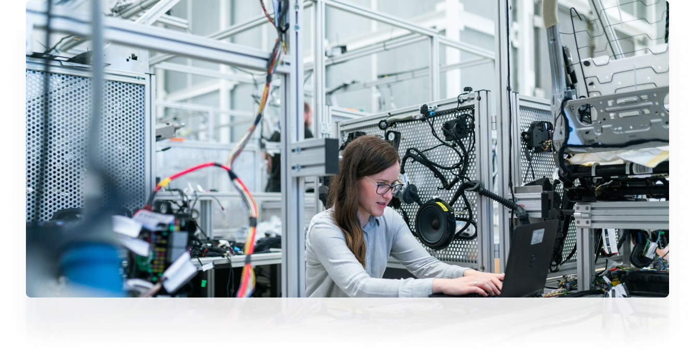
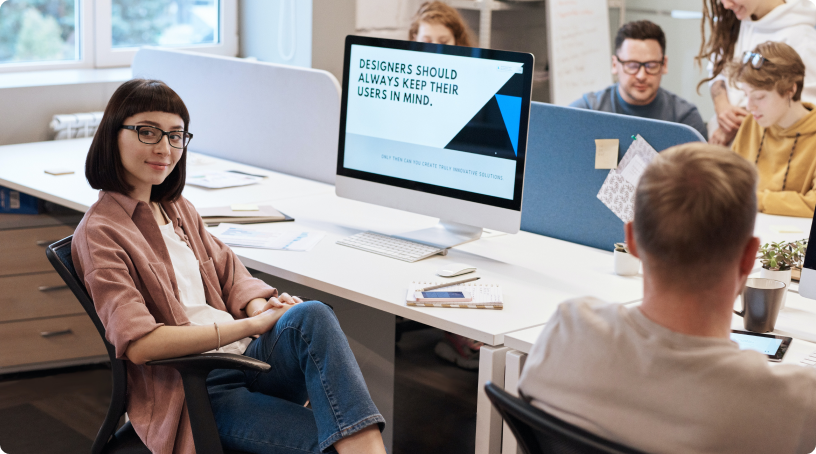

We help you communicate with colleagues
Slack is a proprietary business communication platform developed by American software company Slack Technologies.
Remote is not for everyone
Working remotely has a lot of perks, but it also comes with some things that some people consider to be drawbacks. These are not unsolvable problems, but they can weigh on you if not addressed.
Working remotely can get lonely. You’re no longer in a busy office with tens or hundreds of people. Remote workers also don’t have to commute to the office, which can end up keeping them in the house all day. That can quickly become depressing for people that don’t enjoy this kind of solitude. You can easily fix this by joining a coworking space or going out to work in coffee shops and other social places.
Remote workers also need to be self-starters, motivated, and responsible. In effect, a remote worker is a one-man business. That comes with a lot of responsibility. You’ll own all the wins and all the losses. If you’re not a person will a fair amount of self-discipline, drive, and commitment, remote work might not be the right fit for you.
Create your work environment
Any remote worker needs a proper work environment to be productive. The mind associates spaces with different activities and sets your mental state accordingly. For example, the bedroom is associated with sleeping and relaxation. That’s why you won’t get much done if you plan on lounging on your bed with your laptop all day.
“Move is a powerful tool for designing beautiful websites”
– Bogdan Krivenchenko
I recommend having a separate room for your office. If that’s not an option, think about setting up a work area in your living room. If that’s also not possible, set up your work desk in your bedroom, but consider separating it with some sort of paravane. For those who don’t have space, work hubs such as Mindspace or WeWork are a good alternative but will cost time and money.
Setup a business and a separate bank account
This is self-explanatory. You need to set up a legal framework that you can use to invoice clients and receive payments. Don’t use your personal bank account. It will make it a lot easier to track your income and expenses and assess your performance over time
- This is the one I used the most and I had a good experience with it. It’s a US company, with clients of all sizes and from all over the world. In my experience, I’ve worked mostly with start-ups and small companies.
- They’re similar to Toptal but on a smaller scale. Their projects are mostly from Germany and sometimes require you to travel to the customers’ offices for workshops.
- Those are options you can consider but I don’t recommend them. The quality of the projects and their budgets are average at best.